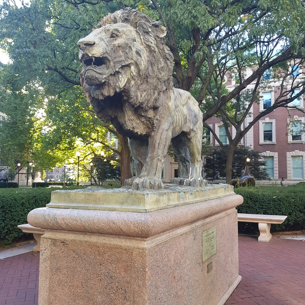

Description: This simple website deploys a classifier built with Keras and Tensorflow. Using transfer learning, the classifier is based partly on a well known CNN model, VGG16, to learn how to classify accurately any of these 3 popular Columbia University landmarks: Alma Mater, Scholars` Lion or The Curl (Columbia Business School).
The model predicts the probabilites of any image to be classified as one of the 3 landmarks.
Wait for the model to load and upload an image. Have fun!
Status
Model Output
